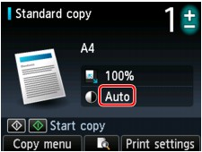

When the Copy standby screen is displayed, press the right Function button to change the copy settings such as magnification and intensity.
Use the 
 button to change the setting item, and the button to change the setting.
button to change the setting item, and the button to change the setting.
 Note
Note-
Depending on the copy menu, some setting items cannot be selected. This section describes the setting items in Standard copy.
The setting item which cannot be selected is displayed grayed out.
For details on the setting items for Photo reprint, see Copying a Printed Photo (Photo reprint).
-
Some settings cannot be specified in combination with the setting of other setting item or the copy menu. If the setting which cannot be specified in combination is selected, Error details is displayed on the LCD. In this case, press the left Function button to confirm the message, then change the setting.
-
The settings of the page size, media type, etc. are retained even if the machine is turned off.
-
When copying starts in the copy menu that is not available with the specified setting, The specified function is not available with current settings. is displayed on the LCD. Change the setting, following the on-screen instructions.
-
Magnif. (Magnification)
Specify the reduction/enlargement method.
-
Intensity
Specify the intensity. When Auto is selected, the intensity is adjusted automatically according to the originals loaded on the Platen Glass. Auto is displayed on the Copy standby screen.
Note-
When Auto is selected, load the original on the Platen Glass.
-
-
Page size
Select the page size of the loaded paper.
-
Type (Media type)
Select the media type of the loaded paper.
-
Print qlty (Print quality)
Adjust print quality according to the original.
 Important
Important-
If you use Fast with Type set to Plain paper and the quality is not as good as expected, select Standard or High for Print qlty and try copying again.
-
Select High for Print qlty to copy in grayscale. Grayscale renders tones in a range of grays instead of black or white.
-
-
2-sided
Specify the setting of Two-sided copy.
-
Layout
Select the layout.
-
Orientation
Select the orientation of the original document.